basic bash/cmd
a command line or a terminal is a purely text-based interface for running commands and performing various operations
git is primarily run through a command line interface
bash is the command line for linux/macOS cmd is for Windows
show current directory
outputs the path the CLI is currently in
bash: pwd
cmd: cd
change directory
change current directory to the one specified by [path]
bash: cd [path]
cmd: cd [path]
directory aliases
. - current directory
.. - previous directory
show directory contents
list down files and subdirectories in current directory, or in [path] if specified
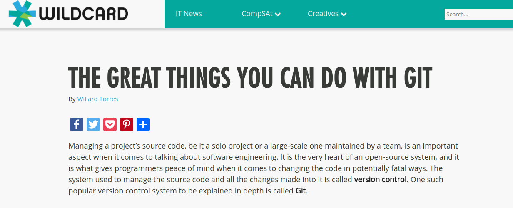
to make a folder into a local git repository, we have to type git init
in the command line
this local repository is useless without a remote repository. this is where GitHub comes in
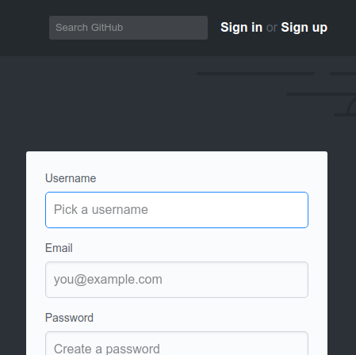
create a new project, give it a name and an optional description
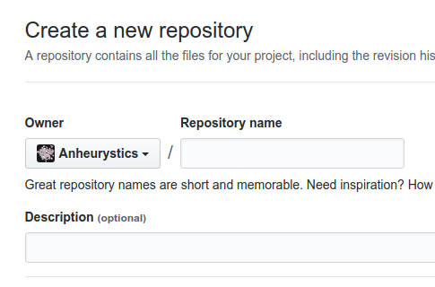
remember the link it shows you afterwards-- this is your remote URL
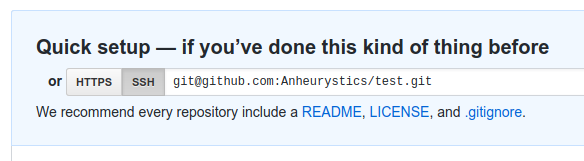
go back to your repo, and set the remote URL using
git remote add [remote-name] [remote-url]
i might've wasted your time, because the previous steps can be also done using
git clone [remote-url] (clone also pulls the changes from the remote repo. we'll get back to that later)
adding local changes
now that we have the local repo connected to the remote repo, we can start adding changes
to add changes to files to the staging area you use the git add command
to package all of the added changes together into one commit, use git commit -m "[commit message]" for now, use the -m switch to specify the commit message right now, instead of having to deal with an external text editor
you can view all of the commits you've made so far using git log
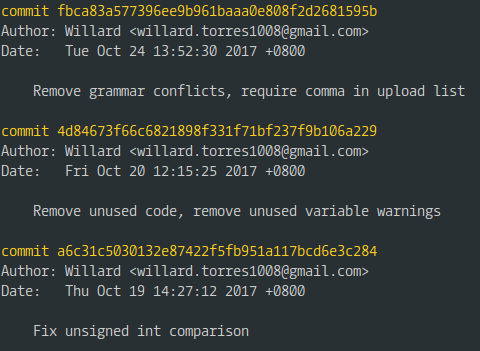
to view the status of your repo, use git status
the status will tell you
the untracked (unadded) files
whether or not your local and remote repositories are synchronized
etc
git diff will tell you in-depth of the changes you've made to a file since your last add/commit
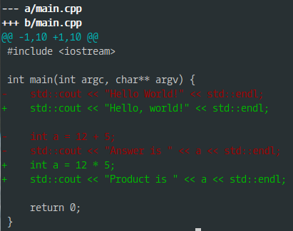
so far, the commits you created are just stored in your local repository. git push [remote] [branch] "uploads" your changes to the remote repository
cleaning up
git revert [commit] undos the changes of a specified commit
git reset [file] "unstages" a file
branching and merging
sometimes, you want different versions of your code in parallel
git branch [branch-name] creates a new branch
git checkout [branch-name] switches to a branch
git checkout -b [branch-name] creates a branch and automatically switches to it
git merge [branch-name] merges the specified branch with the branch you are currently on
git's merge tool tries its best to incorporate changes from both branches, but will throw an error if it finds a MERGE CONFLICT
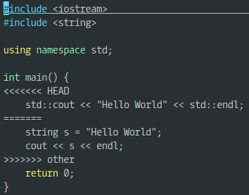
resolving a merge conflict means deleting any conflicting code
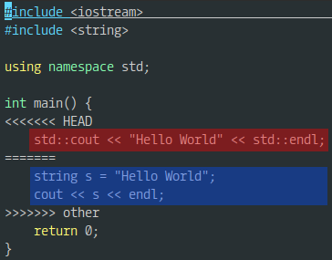
using GitHub
GitHub has other features to make it easy to share code and collaborate with others
in GitHub, to fork a repo means to make a copy of it (source code and commits) for yourself to work on
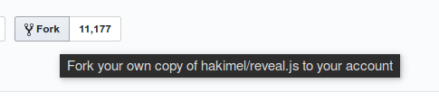
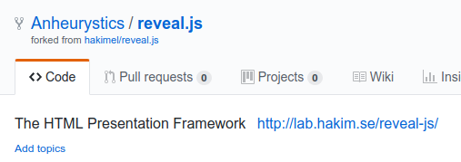
after working on your fork, you can submit a pull request to the original repo to propose changes from your fork
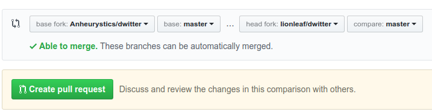
forks are a safe way to contribute to other people's projects while keeping code safe
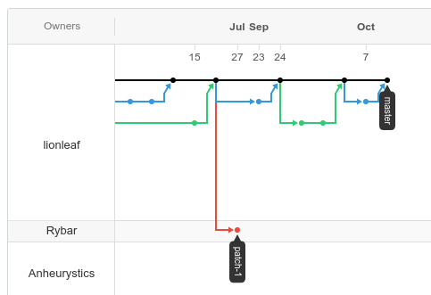
this mechanism is what allows for collaboration in open-source projects on a large scale
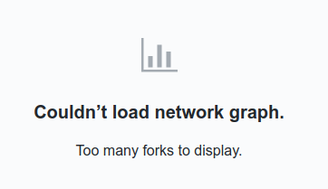